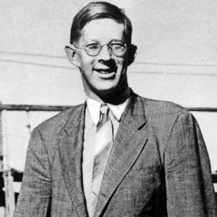

Robert Wadlow, who stood 8 ft 11 in at his death, is the tallest person
in recorded history. Officially the reason given for his great size was hypertrophy of his pituitary gland
which resulted in abnormally high levels of human growth hormone being produced. His name was passed to us as
a person most likely to be an Ultra. We presume then that he was the subject of an experiment to test a
treatment which could produce abnormally large human beings. Either his pituitary gland was artificially
coerced to grow larger than normal or there was some other unofficially recorded reason for his continued
growth. Wadlow surpassed another possible subject of experimentation, John Rogan for the title of the tallest person to ever
live. No information has been passed to us to suggest Rogan was an Ultra, however we find it to be too much of
a coincidence that both men were from broadly the same region of the US.
Achievements
Wadlow achieved some level of fame and celebrity for his great size. His record of being the Tallest man "of
whom there is irrefutable evidence" still stands.
Negative effects
Wadlow died at the age of 22 due to complications from an infection caused by a poorly fitted brace. A brace he
was required to wear due to his extreme size.
Immortalised in the movie A Beautiful Mind John Nash was an
American mathematician who made fundamental contributions to game theory, differential geometry, and the study
of partial differential equations. We believe that Nash was given a version of the cognitive enhancing
treatment which would have greatly helped him in his research. Perhaps a less refined version than the ones in
use today which resulted in more pronounced side effects such as the severe mental illness that he suffered
later in life. Nash died in unfortunate circumstances at the age of 86 in a car crash. Worth noting for the
simple fact that many Ultras die early from non-natural causes. Heart attacks, suicides and overdoses being
common causes of death for an Ultra.
Achievements
Shared winner of the 1994 Nobel Memorial Prize in Economic Sciences as well as shared winner of the 2015 Abel
Prize, Nash achieved great successes in his field making crucial contributions to game theory.
Negative effects
Nash suffered from severe mental health issues due to the treatments given to him, spending much time in
psychiatric hospitals, although in reality he was probably far less ill than is documented.
Nash, like many other Ultras, was put through a program where he was made to believe
that he was special, unique and that he had a specific purpose he was meant to fulfill. That program, designed
to dramatically increase a persons self belief, may have contributed to some of his success, but it also led to
doctors diagnosing him with delusional thinking. When Nash later attributes his delusional thinking to his
unhappiness it is obvious to us that this was something that he must have felt forced to say so that doctors
would allow him to leave the institutions in which he was being held. Having read about some of his other
experiences, it would seem he had discovered some truths behind what was happening to him and may have been on
the verge of uncovering some aspects of the scandal. At that point he would have been institutionalised until he
changed his views and opinions of what he had experienced. We believe this to be highly likely as this is the
very thing we ourselves have been threatened with as we began our campaign to uncover this scandal.